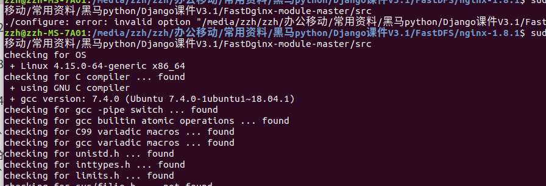
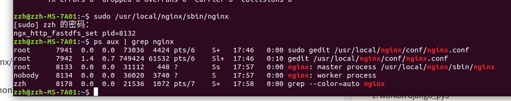

012 分布式图片服务器FastDFS
分布式图片服务器FastDFS¶
1.什么是FastDFS¶
FastDFS 是用c 语言编写的一款开源的分布式文件系统。FastDFS 为互联网量身定制，充分考虑了冗余备份、负载均衡、线性扩容等机制，并注重高可用、高性能等指标，使用FastDFS 很容易搭建一套高性能的文件服务器集群提供文件上传、下载等服务。
FastDFS 架构包括 Tracker server和 Storage server。客户端请求 Tracker server 进行文 件上传、下载，通过 Tracker server 调度最终由 Storage server 完成文件上传和下载。
Tracker server 作用是负载均衡和调度，通过 Tracker server 在文件上传时可以根据一些 策略找到 Storage server 提供文件上传服务。可以将 tracker 称为追踪服务器或调度服务 器。
Storage server 作用是文件存储，客户端上传的文件最终存储在 Storage 服务器上， Storageserver 没有实现自己的文件系统而是利用操作系统 的文件系统来管理文件。可以将 storage 称为存储服务器。
服务端两个角色:
Tracker:管理集群，tracker 也可以实现集群。每个 tracker 节点地位平等。收集 Storage 集群的状态。
Storage:实际保存文件 Storage 分为多个组，每个组之间保存的文件是不同的。每 个组内部可以有多个成员，组成员内部保存的内容是一样的，组成员的地位是一致的，没有 主从的概念。
2 文件上传流程¶
客户端上传文件后存储服务器将文件 ID 返回给客户端，此文件 ID 用于以后访问该文 件的索引信息。文件索引信息包括:组名，虚拟磁盘路径，数据两级目录，文件名。
组名:文件上传后所在的 storage 组名称，在文件上传成功后有 storage 服务器返回， 需要客户端自行保存。
虚拟磁盘路径:storage 配置的虚拟路径，与磁盘选项 store_path*对应。如果配置了 store_path0 则是 M00，如果配置了 store_path1 则是 M01，以此类推。
数据两级目录:storage 服务器在每个虚拟磁盘路径下创建的两级目录，用于存储数据 文件。
文件名:与文件上传时不同。是由存储服务器根据特定信息生成，文件名包含:源存储 服务器 IP 地址、文件创建时间戳、文件大小、随机数和文件拓展名等信息。
3 文件下载流程¶
4.简易FastDFS架构¶
5 FastDFS安装¶
5.1 安装fastdfs依赖包
-
解压缩
libfastcommon-master.zip -
进入到
libfastcommon-master的目录中 -
执行
./make.sh -
执行
sudo ./make.sh install
5.2 安装fastdfs
-
解压缩
fastdfs-master.zip -
进入到
fastdfs-master目录中 -
执行
./make.sh -
执行
sudo ./make.sh install
5.3 配置跟踪服务器tracker
-
sudo cp /etc/fdfs/tracker.conf.sample /etc/fdfs/tracker.conf -
在
/home/zzh/目录中创建目录 fastdfs/tracker
mkdir –p /home/zzh/fastdfs/tracker
- 编辑
/etc/fdfs/tracker.conf配置文件sudo gedit /etc/fdfs/tracker.conf
修改
base_path=/home/zzh/fastdfs/tracker #设置日志文件等的存储路径
5.4 配置存储服务器storage
-
sudo cp /etc/fdfs/storage.conf.sample /etc/fdfs/storage.conf -
在
/home/zzh/fastdfs/目录中创建目录storage
mkdir –p /home/zzh/fastdfs/storage
- 编辑
/etc/fdfs/storage.conf配置文件sudo gedit /etc/fdfs/storage.conf
修改内容：
base_path=/home/zzh/fastdfs/storage store_path0=/home/zzh/fastdfs/storage tracker_server=自己ubuntu虚拟机的ip地址:22122 #tracker_server=192.168.124.42:22122
5.5 启动tracker和 storage
sudo service fdfs_trackerd start
sudo service fdfs_storaged start
不知道为何不行,使用下面的命令启动
fdfs_trackerd /etc/fdfs/tracker.conf start fdfs_storaged /etc/fdfs/storage.conf start
启动查询
ps aux | grep fdfs
重启
sudo /usr/bin/fdfs_trackerd /etc/fdfs/tracker.conf restart sudo /usr/bin/fdfs_storaged /etc/fdfs/storage.conf restart
sudo /usr/bin/fdfs_trackerd /etc/fdfs/tracker.conf stop sudo /usr/bin/fdfs_storaged /etc/fdfs/storage.conf stop
注意点： 我们要是使用终止命令或者使用 kill -9 fdfs进程id 来终结fdfs_storaged服务的，然后用上面的启动命令是启动不了的，因为log日志问题，会出现下面的错误
5.6 测试是否安装成功
-
sudo cp /etc/fdfs/client.conf.sample /etc/fdfs/client.conf -
编辑
/etc/fdfs/client.conf配置文件sudo gedit /etc/fdfs/client.conf
修改内容：
base_path=/home/zzh/fastdfs/tracker tracker_server=自己ubuntu虚拟机的ip地址:22122 #tracker_server=192.168.124.42:22122
- 上传文件测试：
fdfs_upload_file /etc/fdfs/client.conf 要上传的图片文件(文件路径及名字)
如果返回类似group1/M00/00/00/rBIK6VcaP0aARXXvAAHrUgHEviQ394.jpg的文件id则说明文件上传成功
单纯使用fastdfs不能满足海量请求
5.7 安装nginx及fastdfs-nginx-module web服务器 epoll
-
解压缩
nginx-1.8.1.tar.gz -
解压缩
fastdfs-nginx-module-master.zip -
进入
nginx-1.8.1目录中 -
执行
sudo ./configure --prefix=/usr/local/nginx/ --add-module= fastdfs-nginx-module-master解压后的目录的绝对路径/src
这个地方要删除fastdfs-nginx-module-master 路径(只是路径)不要有空格(看下面) 同时不要有中文的路径,不然安装不成功
错误的安装
sudo ./configure --prefix=/usr/local/nginx/ --add-module=/media/zzh/zzh/办公移动/常用资料/黑马python/Django课件V3.1/FastDginx-module-master/src

正确的安装
sudo ./configure --prefix=/usr/local/nginx/ --add-module=/home/zzh/fastdfs-nginx-module-master/src
sudo ./make 这里应该改成 sudo make
不幸的是又报错了
解决方法： 直接修改nginx安装包下
/objs/Makefile文件中的-Werror。 去掉红色部分 CC =gcc CFLAGS = -pipe -O -W -Wall -Wpointer-arith -Wno-unused-parameter-Werror-g -D_LARGEFILE_SOURCE -DBUILDING_NGINX CPP = gcc -E LINK = $(CC)
sudo ./make install 这里应该是 sudo make install
sudo cp fastdfs-nginx-module-master解压后的目录中src下的mod_fastdfs.conf /etc/fdfs/mod_fastdfs.conf
sudo cp mod_fastdfs.conf /etc/fdfs/mod_fastdfs.conf
sudo gedit /etc/fdfs/mod_fastdfs.conf
修改内容：
connect_timeout=10 tracker_server=自己ubuntu虚拟机的ip地址:22122 url_have_group_name=true #带不带组信息 store_path0=/home/zzh/fastdfs/storage
- sudo cp 解压缩的fastdfs-master/conf目录中的http.conf /etc/fdfs/http.conf
sudo cp '/media/zzh/zzh/办公移动/常用资料/黑马python/Django课件V3.1/FastDFS/fastdfs-master/conf/http.conf' /etc/fdfs/http.conf -
sudo cp 解压缩的fastdfs-master目录中的mime.types /etc/fdfs/mime.types
sudo cp '/media/zzh/zzh/办公移动/常用资料/黑马python/Django课件V3.1/FastDFS/fastdfs-master/conf/mime.types' /etc/fdfs/mime.types -
sudo gedit /usr/local/nginx/conf/nginx.conf
在http部分中添加配置信息如下：
# myself add server { listen 8888; server_name localhost; location ~/group[0-9]/ { ngx_fastdfs_module; } error_page 500 502 503 504 /50x.html; location = /50x.html { root html; } } # myself add
- 启动nginx
先看下没启动是什么样子的
启动的命令
sudo /usr/local/nginx/sbin/nginx
启动后停止
sudo /usr/local/nginx/sbin/nginx -s stop
测试一下nginx是不是能用了
在浏览器中敲入地址
http://127.0.0.1:8888/group1/M00/00/00/wKh8Kl2u066AZHnrABYlnmXXzNA082.jpg
这个8888端口号后面的就是我们上传到fastdfs后返回的图片地址
这里同样可以写本机的ip地址也是可以的
6. 使用python客户端上传测试 fastdfs¶
-
workon django_py3 #激活环境
source activate django -
进入
fdfs_client-py-master.zip所在目录 -
pip install fdfs_client-py-master.zip缺少两个python的包pip install mutagenpip install requests
4.
from fdfs_client.client import Fdfs_client #导包 client = Fdfs_client('/etc/fdfs/client.conf') #连接(创建类对象) ret = client.upload_by_filename('/home/zzh/桌面/123.jpg') #上传文件 # 输出 <fdfs_client.connection.Connection object at 0x7f94b70b76d8> # <fdfs_client.fdfs_protol.Tracker_header object at 0x7f94b70b76a0> ret
>>> ret {'Group name': 'group1', 'Remote file_id': 'group1/M00/00/00/wKh8Kl2u9KaAOJTxABYlnmXXzNA556.jpg', 'Status': 'Upload successed.', 'Local file name': '/home/zzh/桌面/123.jpg', 'Uploaded size': '1.00MB', 'Storage IP': '192.168.124.42'}